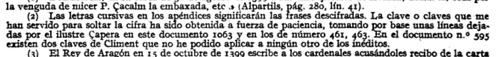
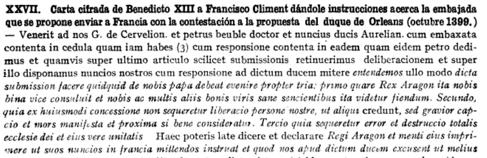
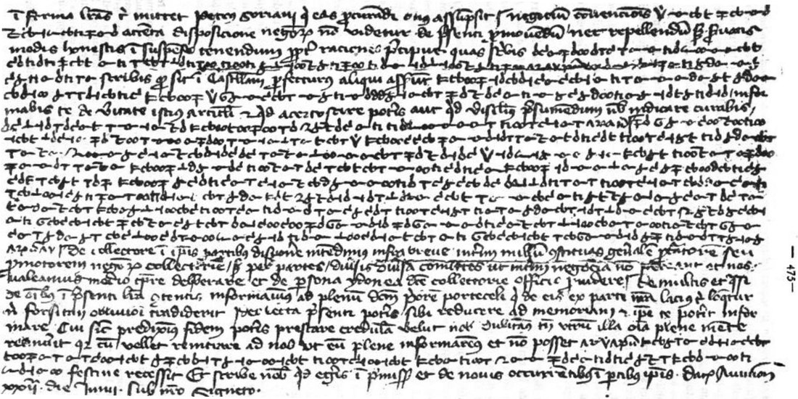
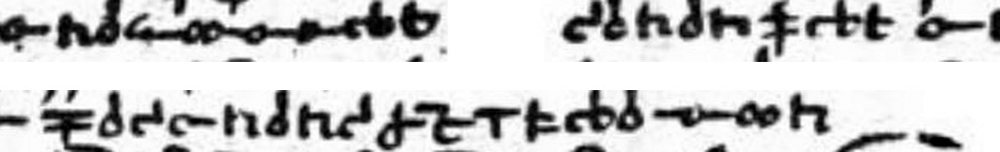

: Benedict XIII as St Peter, panel by Joan Reixach, 15th century. Wikimedia Commons, public domain.")
At a glanceExisting decipherment · complete
- The letters
- Benedict XIII (Pedro de Luna) to Francesc Climent, his chamberlain and agent in Barcelona, from the besieged palace at Avignon, September 1399 to February 1403. Five letters of men of his circle, deciphered by the same editor, have their own pages.
- Where
- Arxiu Capitular de Barcelona, the Schism papers Climent left to the chapter (Puig’s “Documentos inéditos del obispo Çapera”, today the paper part of the series Cisma d’Occident). Not digitised. Catalogue entry 334 here.
- The cipher
- Clear Latin with ciphered words and passages. The cipher is a plain substitution, one sign per letter, 20 letter values, signs joined without word breaks, with a dotted V for the King of Aragon and groups of null signs at sentence breaks.
- How it was deciphered
- By Sebastián Puig y Puig, canon of Barcelona, in 1920. He rebuilt the key “a fuerza de paciencia” from lines Climent had deciphered on three of the letters, and printed the letters with the deciphered passages in italics. He never printed the key. It is rebuilt here from his one facsimile page (section 05).
- What it says
- Money for a pope under siege, embassies to Paris, and whom to trust. One passage gives his three reasons for refusing the “submission” France demanded: it would bring gravior capcio et mors manifesta, a harsher captivity and plain death.
- Key
- Rebuilt from the facsimile against Puig’s text. It decrypts every legible cipher run on the page: 755 of 826 letters confirmed sign by sign (91%), none against it. It corrects Puig three times, for example te sicudum to tenendum.
- Still open
- Puig’s printed text of the ten letters is not copied into the repository (Google Books refuses scripts); what is held and checked here is the p. 475 facsimile page, word by word (reading audit, 22 October 2026). One overwritten stretch of the facsimile page, and the ciphertext of the other letters, which is not imaged.
- Credit
- The decipherment is Puig’s (1920); the key table is new here. Meister (1906) reported the documents on information from Franz Ehrle.
01 What Meister reported
In his history of papal cryptography, Aloys Meister wrote that Benedict XIII kept to the cipher practice of his predecessor Clement VII. Examples, he said, were in the cathedral archive of Barcelona, in a box labelled Documentos referentes a la familia Luna I: a letter in Benedict’s own hand with some lines in cipher, and an instruction of about three folio pages, a large part of it in cipher. His footnote says the information came from Father Ehrle, who assured him the texts were “mixed with signs”. Meister had not seen them and printed neither.
That made it the project’s best lead for a ciphertext from before 1425 with no known decipherment, and possibly 1,500–3,000 signs of papal cipher from about 1400. The archive scan of 23 September 2026 found no decipherment of it. One check was left: Puig y Puig’s 1920 book on Pedro de Luna, which HathiTrust would not serve to this machine.
02 Puig y Puig, 1920
Sebastián Puig y Puig, canon of Barcelona, found the papers while working on his history of the bishops of Barcelona. They were Climent’s own. Francesc Climent, called Çapera, was Benedict’s chamberlain and treasurer, nuncio to Castile, later bishop of Barcelona and patriarch of Jerusalem, and he left his books and papers to the chapter when he died in 1430. Puig sorted the paper documents under the working title Documentos inéditos del obispo Çapera, and from them wrote Pedro de Luna, último papa de Aviñón (Barcelona, 1920). In the preface he says he printed the most important of them, “especially the ten or eleven written in an unknown key, which after laborious trials we had the good fortune to decipher”.
A note at the first of them explains how.

So Climent had deciphered some lines himself, on three of the letters, and Puig used those lines as a crib to recover the key and decipher the rest. Because the cipher is mixed into clear Latin, a ciphered word is usually framed by clear context, which is the situation Puig describes.
Puig’s borrowing had a cost. When the archive was catalogued in the 1970s, Josep Baucells quoted a note by the archivist Josep Mas: between 1920 and 1930 Canon Puig studied a large part of the Schism documents at home, “but many were not returned”. Some of the cipher originals may now survive only in Puig’s print.
03 The cipher letters
Puig’s appendix calls fourteen items carta cifrada. Ten are Benedict XIII’s own, and this page is about them. The other four, and a deciphered sentence of a fifth letter quoted in a note, come from other men of his circle; Puig speaks of “la clave o claves”, and nothing shows that they used Benedict’s key, so each has its own page: Santa Cruz, October 1399, Jafet, September 1400, Exea, August 1408, Comuel, December 1415 and Comuel, June 1416. Every page of the fourteen was checked for gaps. He leaves no gap in the deciphered text, and a handful of odd forms inside the italics (“mi. i ur”, “ot.o”, “cer ificari”) look like one-letter slips of decipherment or print.
| Puig | Date | From → to | Deciphered | Subject |
|---|---|---|---|---|
| XXVI | 22 Sep 1399, Avignon | Benedict → Climent | ~195 words | The bishop of Apt coming from Paris to work against him; press the kings of Aragon, Castile and Navarre for an embassy. One of the three letters with Climent’s own decipherment. |
| XXVII | Oct 1399 | Benedict → Climent | ~490 | Why he refuses the “submission”; who should go to France; bring ambassadors to Arles by armed boat. Long stretches of Aragonese and Castilian inside the cipher. |
| XXXV | 22 Jun 1400, Avignon | Benedict → Climent | ~260 | Money for the count of Fondi and for his own keep; the King of Aragon’s embassy to France. The last page is in facsimile. |
| XXXVI | 2 Jul 1400, Avignon | Benedict → Climent | ~325 | Geraldo de Cervelló’s intrigues over the see of Lérida; send two Carthusians at once. Mostly in cipher. |
| XXXVII | 24 Sep 1400, Avignon | Benedict → Climent | ~19 | One sentence: send 3,000 francs. |
| XXXIX | 6 Oct 1400, Avignon | Benedict → Climent | ~33 | The 3,000 francs again. |
| XLI | 18 Dec 1400 | Benedict → Climent | ~100 | Send 3,000 or 4,000 francs; almost entirely in cipher, date and address included. |
| XLII | 29 Dec 1400, Avignon | Benedict → Climent | ~255 | Send the 5,000 you hold; sent “without the Pope’s signet, for a reason”. |
| XLIII | 11 Jan 1401, Avignon | Benedict → Climent | ~420 | The King of Aragon’s loan affair; fear of being accused of collusion. Nearly all in cipher; one of the three letters with Climent’s own decipherment. |
| LII | 8 Feb 1403, Avignon | Benedict → the bishop of Ávila and Climent | ~85 | Three forms of the bull for Castile’s return to his obedience; act boldly. The third letter with Climent’s own decipherment. |
The word counts are estimates from Puig’s printed lines. Benedict’s own letters, from the siege of the Avignon palace to his escape in March 1403, carry about 2,200 deciphered words. That is more than Meister’s “three folio pages”, which is probably letter XXVII, and one letter with “some lines” in cipher.

04 The one page of cipher in print
Puig printed no key and no sign table, but on p. 475 he inserted, sideways and without a caption, a photogravure of the last page of letter XXXV (22 June 1400). His printed text of the same passage runs in a narrow column beside it, so every cipher run on the plate comes with its plaintext.

The signs are small invented shapes, several of them joined by hair-lines, written into the line of ordinary Latin. Two runs were aligned with Puig’s text to see what kind of cipher it is and whether his italics fit:
- End of line 1: Negocium convencionis, then a dotted V̇, then signs for cum duce Burgundie. Puig prints “Regis Arag.” in roman here, so V̇ is a name sign for the King of Aragon that he expanded. In the letters that follow, u is the same sign three times, and d, e and c each repeat.
- Start of line 8, et presertim scribe qu…: e repeats four times, s twice and i twice. The value for m matches the one found for cum in line 1, and the values for b, c and u match those in Burgundie.
It is a letter-for-letter substitution in invented signs, with name signs mixed in, and Puig’s decipherment fits where it was tested. Google serves the page at 1826 × 2500 pixels, about forty pixels per manuscript line of a reduced halftone, and a first attempt on the long run broke down at quo modo se habet. A second pass over the whole page did better.
05 The key, rebuilt
No sharper image could be found. The Google scan is the largest served, the second Google copy is snippet view, and HathiTrust would not serve its copy. So the plate was cut from the page, turned upright, straightened by 0.7°, and split into its 26 lines. Each cipher run was then examined at three to five times magnification with the contrast stretched, word by word against Puig’s text. At that scale the signs separate once the plaintext fixes where each word falls. One key decrypts the whole page:
| Plain | Sign on the plate | Plain | Sign on the plate |
|---|---|---|---|
| a | open hook, like a δ with no bowl | n | n |
| b | T with a bar | p | inverted T with a stroke (⊥) |
| c, i | a small o | q | double-barred upright |
| d | double cross (‡) | r | a single upright stroke |
| e | δ | s | T |
| f | σ with a flag | t | c with a stroke above (c′) |
| g | a 4-like sign | u, v | cb, written as one joined sign |
| h | a 2-like sign | x | an α-like sign |
| o | a double loop (ꝏ) | ||
| l | a looped d | V̇ = the King of Aragon (Rex, Regis, Regi Aragonum, four times) | |
| m | ε with a foot | groups of λ- and ʒ-like signs = nulls at sentence breaks | |
It is the simplest kind of cipher: one sign for each letter, no alternatives, no word breaks. Many of the signs are ordinary letters used for other letters (n is n, but T is s and δ is e), so a run looks like scrambled handwriting. The letter o is written as a double loop, so modis is m ꝏ d o s in signs. c and i share a single small o on the 1920 halftone, and d and p are hard to tell apart. The original may separate them with a tick or a dot the reproduction lost. Four groups of λ- and ʒ-like signs stand where Puig prints a semicolon or a dash, and he gives no text for them. They are nulls marking punctuation.

How much it decrypts. The cipher runs on the page carry 148 words, 826 letters of Puig’s plaintext. 125 words were confirmed sign by sign. Sixteen have one to three signs too blurred to confirm. Seven, in line 4, fall in a stretch that the writer underlined and overwrote, which the halftone cannot resolve. That makes 755 of 826 letters confirmed (91.4%), or 96.3% of the legible runs, and not one sign contradicts the key. The word-by-word record is plate475_check.tsv, and the key is key.md.
Three corrections to Puig. In line 4 the cipher says tenendum, not Puig’s te sicudum, which is not a Latin word. The sentence is et ideo est sic negocium tenendum in suspenso: “so the business is to be kept in suspense”, repeating the clear in suspenso tenendum just before it. In line 24 the Prior of Portaceli, the Pope’s messenger, frightened off by the besiegers, left absque congedio, “without leave”, not abique congerio. And necesaria is written necessaria. Otherwise Puig’s decipherment of the page stands. The key is a known-plaintext reconstruction. The decipherment is Puig’s; the key he worked out in 1920 is now on record.
06 What remains open
- Line 4 of the facsimile, non approbando nec reprobando; de cardinali catan-, is underlined and overwritten in the original and cannot be transcribed sign by sign on the halftone. Neither can the sixteen blurred signs elsewhere (blocker: needs a photograph of doc. 1068 or a 600-dpi scan of p. 475).
- The other letters’ ciphertext. The key should decrypt all of Benedict’s letters of 1399–1403, but none of them is imaged (blocker: needs the originals, some of which Puig may not have returned).
- Not this cipher: a line of 4 December 1398 in a key Puig calls unknown (Vico to Carbonell, 1398, its own page), and two keys of Climent in document 595 that Puig could apply to nothing and did not print.
The material Meister reported, a long papal cipher of about 1400, was deciphered and printed by Puig in 1920. The project’s oldest-cipher search goes on with the other candidates, all of which also need photographs from the archives.
Full texts
The transcription and the decryption of every document on this page, so that the reading can be used and checked. Short files are shown here; all are in the repository.
Ten letters, Puig app. XXVI-LII (22 Sep 1399 - 8 Feb 1403); in the repository only the facsimile p. 475 (app. XXXV, 22 Jun 1400), checked word by word
Benedict XIII (Pedro de Luna), besieged in Avignon, writes in cipher to his agent Francesc Climent (Çapera) in Barcelona on the Schism diplomacy of 1399-1403: the embassy of Aragon, Castile and Navarre, the 'submission' he refused, the see of Lérida, a demand for 3,000 francs, and the bulls for Castile's restitution of obedience. The decipherment is Sebastián Puig y Puig's, printed with the cipher passages in italics in Pedro de Luna (Barcelona 1920), appendix pp. 466-491 (Google Books scan); the only image of the cipher is the p. 475 facsimile, checked word by word in src/plate475_check.tsv.
Transcription
# Puig 1920 p. 475 facsimile (last page of app. XXXV, Benedict XIII to Climent, Avignon 22 June 1400, ACB doc. 1068). # Cipher runs, word by word, against Puig's italics, read from the Google Books scan (1826x2500) deskewed -0.7 deg, 3-4x zoom. # status: y = every sign seen and fits the key in key.md; p = partly seen or one sign unclear; n = not checked / not legible here. # 'plate' column: where the plate differs from Puig's print. # line run word status unclear_letters plate 1 R1 K y 0 dotted-V sign (Regis Arag.) 1 R1 cum y 0 1 R1 duce y 0 2 R1 burgundie p 3 3 R2 et y 0 3 R2 ideo y 0 3 R2 est y 0 3 R2 sic p 1 s drawn as a tall f-like stroke 3 R2 negocium y 0 4 R2 tenendum y 0 plate: tenendum; Puig prints 'te sicudum' 4 R2 in y 0 4 R2 suspenso p 3 4 R2 non n 3 line 4 has an underlined (expunged?) stretch and overwriting 4 R2 approbando n 10 4 R2 nec n 3 4 R2 reprobando n 10 4 R2 SEP p separator group of lambda-like signs where Puig prints ';' 4 R2 de n 2 4 R2 cardinali n 9 4 R2 catan n 5 5 R2 iensi y 0 5 R3 quod y 0 5 R3 revertitur y 0 5 R3 in y 0 5 R3 siciliam y 0 5 R3 alii y 0 6 R3 vero y 0 6 R3 asserunt y 0 6 R3 quod y 0 6 R3 K y 0 dotted-V (Reg. Aragon.) 6 R3 factus y 0 6 R3 cancellarius y 0 6 R3 debet y 0 6 R3 in y 0 6 R3 catalonia y 0 6 R3 remanere y 0 8 R4 et y 0 8 R4 presertim p 1 8 R4 scribe y 0 8 R4 quo y 0 8 R4 modo p 1 8 R4 se y 0 8 R4 habet y 0 8 R4 in y 0 8 R4 negociis y 0 8 R4 nostris y 0 8 R4 SEP y separator group where Puig prints '—' 8 R4 de y 0 8 R4 facto y 0 8 R4 bonorum p 2 9 R4 petri p 1 9 R4 de y 0 9 R4 bosco y 0 9 R4 ideo y 0 9 R4 scripsimus y 0 9 R4 K y 0 dotted-V (Regi Aragon.) 9 R4 quod p 1 9 R4 tu y 0 9 R4 diceres y 0 9 R4 sibi y 0 9 R4 mentem y 0 9 R4 nostram y 0 9 R4 ne y 0 9 R4 alius p 2 10 R4 sibi y 0 10 R4 hoc y 0 10 R4 atribueret y 0 10 R4 et y 0 10 R4 sibi y 0 10 R4 pocius y 0 10 R4 deberet y 0 10 R4 K y 0 dotted-V (Rex Arag.) 10 R4 regraciari p 3 10 R4 quam y 0 10 R4 nobis y 0 10 R4 ideo y 0 11 R4 dices y 0 11 R4 sibi y 0 11 R4 quod y 0 11 R4 placet y 0 11 R4 nobis y 0 11 R4 et y 0 11 R4 sumus y 0 11 R4 contenti y 0 11 R4 quod y 0 11 R4 recipiat y 0 11 R4 ad y 0 11 R4 voluntatem y 0 12 R4 suam y 0 12 R4 sed y 0 12 R4 quod y 0 12 R4 atentis y 0 12 R4 tribulacione y 0 12 R4 statu y 0 12 R4 et y 0 12 R4 expensis y 0 12 R4 nostris y 0 12 R4 velit y 0 12 R4 in y 0 13 R4 suportandis y 0 13 R4 oneribus p 2 13 R4 aliquem p 2 13 R4 habere y 0 13 R4 respectum y 0 13 R4 sicut y 0 13 R4 ambaxiatis p 2 13 R4 et y 0 14 R4 similibus y 0 14 R4 quia y 0 14 R4 prout y 0 14 R4 nosti y 0 14 R4 necessitatem y 0 14 R4 nostram p 1 14 R4 nisi y 0 14 R4 alius y 0 14 R4 respectus y 0 14 R4 habeatur p 2 15 R4 in y 0 15 R4 futurum y 0 15 R4 dubitamus y 0 15 R4 ex y 0 15 R4 toto y 0 15 R4 deficere y 0 15 R4 deficientibus y 0 15 R4 provisionibus y 0 15 R4 factas y 0 16 R4 alias y 0 16 R4 ut y 0 16 R4 potes y 0 16 R4 cogitare y 0 16 R4 nec y 0 16 R4 poterimus y 0 16 R4 in y 0 16 R4 futurum y 0 16 R4 suficere y 0 16 R4 ad y 0 16 R4 necessaria y 0 plate: necessaria (TT); Puig 'necesaria' 17 R4 SEP y separator group (lambda-z, barred p, lambda-z) where Puig prints '—'; not printed by Puig 23 R5 SEP p separator group (lambda-z, dotted V, lambda-z, s-u, arc) before 'quasi'; not printed by Puig 23 R5 quasi y 0 23 R5 territus p 2 24 R5 modis y 0 24 R5 istorum y 0 24 R5 adversariorum y 0 24 R5 nostrorum y 0 24 R5 qui y 0 24 R5 nos y 0 24 R5 hic y 0 24 R5 detinent y 0 24 R5 absque y 0 plate: absque; Puig prints 'abique' 24 R5 con y 0 25 R5 gedio y 0 plate: congedio (con|gedio); Puig prints 'congerio'
Decryption: books?id=CuOlkxWnk-EC
Reading
<!-- EXCERPT. Reading of the five cipher runs on the only image of the cipher, the p. 475 facsimile in Puig y Puig, Pedro de Luna (1920) (last page of app. XXXV, Benedict XIII to Francesc Climent, Avignon, 22 June 1400, ACB doc. 1068), made 23 Oct 2026 by Claude Opus 5.5 from src/plate475_check.tsv (each word checked sign by sign against the key in key.md, with the plate's corrections of Puig: tenendum, necessaria, absque congedio). The ten letters in full are Puig's print (Google Books CuOlkxWnk-EC), not held in the repository; the clear text around the runs on p. 475 is not transcribed here either. Word division, capitals and punctuation editorial; K = the dotted-V sign for the King of Aragon, given as Rex Aragonum in the case the sense needs ([Regis], [Rex], [Regi]); words not checked on the plate (line 4) are given from Puig's print and marked [?word]; the separator groups are left out. --> # Benedict XIII to Francesc Climent, Avignon, 22 June 1400: the cipher runs on the p. 475 plate (excerpt) ## Reading R1. ... [Regis Aragonum] cum duce Burgundie. R2. Et ideo est sic negocium tenendum in suspenso, [?non] [?approbando] [?nec] [?reprobando]. [?De] [?cardinali] [?Catan]iensi, R3. quod revertitur in Siciliam; alii vero asserunt quod [Rex Aragonum] factus cancellarius debet in Catalonia remanere. R4. Et presertim scribe quo modo se habet in negociis nostris. De facto bonorum Petri de Bosco: ideo scripsimus [Regi Aragonum] quod tu diceres sibi mentem nostram, ne alius sibi hoc atribueret, et sibi pocius deberet [Rex Aragonum] regraciari quam nobis. Ideo dices sibi quod placet nobis et sumus contenti quod recipiat ad voluntatem suam; sed quod, atentis tribulacione, statu et expensis nostris, velit in suportandis oneribus aliquem habere respectum, sicut ambaxiatis et similibus; quia, prout nosti necessitatem nostram, nisi alius respectus habeatur in futurum, dubitamus ex toto deficere, deficientibus provisionibus factas alias, ut potes cogitare, nec poterimus in futurum suficere ad necessaria. R5. ... quasi territus modis istorum adversariorum nostrorum qui nos hic detinent absque congedio.
Translation
<!-- EXCERPT. English translation of texts/plate475_reading.md (Claude Opus 5.5, 23 Oct 2026): only the five cipher runs on the p. 475 plate; the ten letters in full are in Puig y Puig (1920) and not in the repository. Same holes. --> # Benedict XIII to Francesc Climent, Avignon, 22 June 1400: the cipher runs on the p. 475 plate (excerpt), English translation R1. ... [of the King of Aragon] with the Duke of Burgundy. R2. And therefore the business is to be held thus in suspense, [?neither] [?approving] [?nor] [?disapproving]. [?Of] [?the] [?Cardinal] [?of] [?Catania], R3. that he is going back to Sicily; but others assert that [the King of Aragon], having been made chancellor, is to remain in Catalonia. R4. And above all write how he behaves in our affairs. On the matter of the goods of Pere de Bosc: we therefore wrote to [the King of Aragon] that you would tell him our mind, so that no one else should claim this for himself, and that [the King of Aragon] should rather thank him than us. So you will tell him that it pleases us and we are content that he receive [them] at his will; but that, considering our tribulation, our state and our expenses, he should be willing to have some regard in bearing the burdens, such as embassies and the like; because, as you know our need, unless some other regard is had in future, we fear we shall fail altogether, the provisions made elsewhere failing, as you can imagine; nor shall we be able in future to suffice for necessities. R5. ... as if terrified by the ways of these adversaries of ours, who keep us here without leave.
Key: key.md
07 Sources
- S. Puig y Puig, Pedro de Luna, último papa de Aviñón (1387–1430), Barcelona: Editorial Políglota, 1920. Preface p. 2; appendix with the cipher letters pp. 461–579; facsimile p. 475; index from p. 621. Full view on Google Books (CuOlkxWnk-EC), University of Wisconsin copy; HathiTrust record 100676638.
- A. Meister, Die Geheimschrift im Dienste der päpstlichen Kurie, Paderborn 1906, pp. 22–23 and note 1 (Internet Archive).
- J. Baucells i Reig, El fons Cisma d’Occident de l’Arxiu Capitular de la Catedral de Barcelona: catàlegs, còdexs i pergamins, Barcelona: Institut d’Estudis Catalans, 1978, pp. 11–13 (PDF on the archive’s site).
- Archive-scan notes of 23 September 2026,
research/oldest/scan_2026-09-23/iberia.md, candidate 1.
Notes, the key, the word-by-word check of the facsimile and the profile are in targets/benedict1399/.